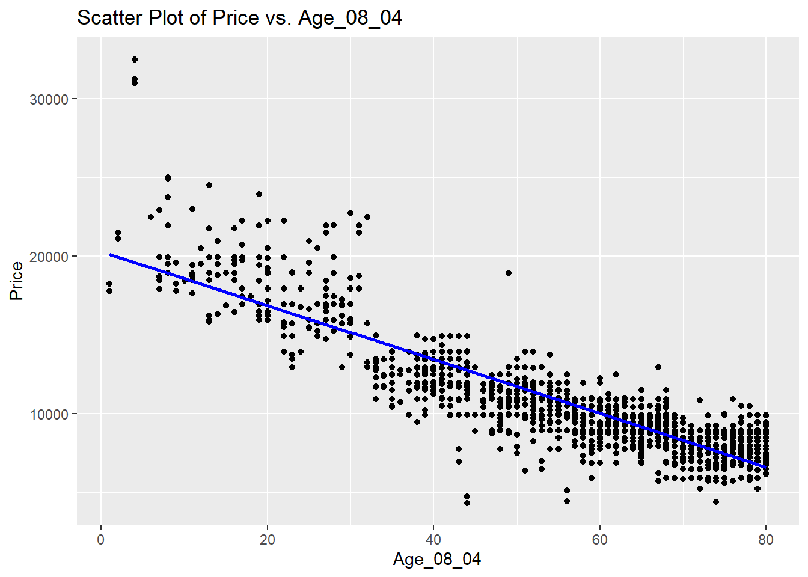

summary(cars) speed dist
Min. : 4.0 Min. : 2.00
1st Qu.:12.0 1st Qu.: 26.00
Median :15.0 Median : 36.00
Mean :15.4 Mean : 42.98
3rd Qu.:19.0 3rd Qu.: 56.00
Max. :25.0 Max. :120.00 This is an R Markdown document. Markdown is a simple formatting syntax for authoring HTML, PDF, and MS Word documents. For more details on using R Markdown see http://rmarkdown.rstudio.com.
When you click the Knit button a document will be generated that includes both content as well as the output of any embedded R code chunks within the document. You can embed an R code chunk like this:
summary(cars) speed dist
Min. : 4.0 Min. : 2.00
1st Qu.:12.0 1st Qu.: 26.00
Median :15.0 Median : 36.00
Mean :15.4 Mean : 42.98
3rd Qu.:19.0 3rd Qu.: 56.00
Max. :25.0 Max. :120.00 You can also embed plots, for example:

Note that the echo = FALSE parameter was added to the code chunk to prevent printing of the R code that generated the plot.
1. Create a new Rmarkdown document that will show case your data exploration, modeling, and error testing.
library(tidyverse)── Attaching core tidyverse packages ──────────────────────── tidyverse 2.0.0 ──
✔ dplyr 1.1.2 ✔ readr 2.1.4
✔ forcats 1.0.0 ✔ stringr 1.5.0
✔ ggplot2 3.4.3 ✔ tibble 3.2.1
✔ lubridate 1.9.2 ✔ tidyr 1.3.0
✔ purrr 1.0.2
── Conflicts ────────────────────────────────────────── tidyverse_conflicts() ──
✖ dplyr::filter() masks stats::filter()
✖ dplyr::lag() masks stats::lag()
ℹ Use the conflicted package (<http://conflicted.r-lib.org/>) to force all conflicts to become errorslibrary(rpart)
library(caret)Loading required package: lattice
Attaching package: 'caret'
The following object is masked from 'package:purrr':
liftlibrary(GGally)Registered S3 method overwritten by 'GGally':
method from
+.gg ggplot22. Explore the data and determine the number of variables and the quantity of any missing values. If values are missing, prescribe a plan to deal with the problem.
Toycor <- read.csv("ToyotaCorolla.csv")
str(Toycor)'data.frame': 1436 obs. of 39 variables:
$ Id : int 1 2 3 4 5 6 7 8 9 10 ...
$ Model : chr "TOYOTA Corolla 2.0 D4D HATCHB TERRA 2/3-Doors" "TOYOTA Corolla 2.0 D4D HATCHB TERRA 2/3-Doors" "TOYOTA Corolla 2.0 D4D HATCHB TERRA 2/3-Doors" "TOYOTA Corolla 2.0 D4D HATCHB TERRA 2/3-Doors" ...
$ Price : int 13500 13750 13950 14950 13750 12950 16900 18600 21500 12950 ...
$ Age_08_04 : int 23 23 24 26 30 32 27 30 27 23 ...
$ Mfg_Month : int 10 10 9 7 3 1 6 3 6 10 ...
$ Mfg_Year : int 2002 2002 2002 2002 2002 2002 2002 2002 2002 2002 ...
$ KM : int 46986 72937 41711 48000 38500 61000 94612 75889 19700 71138 ...
$ Fuel_Type : chr "Diesel" "Diesel" "Diesel" "Diesel" ...
$ HP : int 90 90 90 90 90 90 90 90 192 69 ...
$ Met_Color : int 1 1 1 0 0 0 1 1 0 0 ...
$ Color : chr "Blue" "Silver" "Blue" "Black" ...
$ Automatic : int 0 0 0 0 0 0 0 0 0 0 ...
$ CC : int 2000 2000 2000 2000 2000 2000 2000 2000 1800 1900 ...
$ Doors : int 3 3 3 3 3 3 3 3 3 3 ...
$ Cylinders : int 4 4 4 4 4 4 4 4 4 4 ...
$ Gears : int 5 5 5 5 5 5 5 5 5 5 ...
$ Quarterly_Tax : int 210 210 210 210 210 210 210 210 100 185 ...
$ Weight : int 1165 1165 1165 1165 1170 1170 1245 1245 1185 1105 ...
$ Mfr_Guarantee : int 0 0 1 1 1 0 0 1 0 0 ...
$ BOVAG_Guarantee : int 1 1 1 1 1 1 1 1 1 1 ...
$ Guarantee_Period : int 3 3 3 3 3 3 3 3 3 3 ...
$ ABS : int 1 1 1 1 1 1 1 1 1 1 ...
$ Airbag_1 : int 1 1 1 1 1 1 1 1 1 1 ...
$ Airbag_2 : int 1 1 1 1 1 1 1 1 0 1 ...
$ Airco : int 0 1 0 0 1 1 1 1 1 1 ...
$ Automatic_airco : int 0 0 0 0 0 0 0 0 0 0 ...
$ Boardcomputer : int 1 1 1 1 1 1 1 1 0 1 ...
$ CD_Player : int 0 1 0 0 0 0 0 1 0 0 ...
$ Central_Lock : int 1 1 0 0 1 1 1 1 1 0 ...
$ Powered_Windows : int 1 0 0 0 1 1 1 1 1 0 ...
$ Power_Steering : int 1 1 1 1 1 1 1 1 1 1 ...
$ Radio : int 0 0 0 0 0 0 0 0 1 0 ...
$ Mistlamps : int 0 0 0 0 1 1 0 0 0 0 ...
$ Sport_Model : int 0 0 0 0 0 0 1 0 0 0 ...
$ Backseat_Divider : int 1 1 1 1 1 1 1 1 0 1 ...
$ Metallic_Rim : int 0 0 0 0 0 0 0 0 1 0 ...
$ Radio_cassette : int 0 0 0 0 0 0 0 0 1 0 ...
$ Parking_Assistant: int 0 0 0 0 0 0 0 0 0 0 ...
$ Tow_Bar : int 0 0 0 0 0 0 0 0 0 0 ...missing_values <- colSums(is.na(Toycor))3. Analyze whether the Price variable is appropriate for a linear regression model and discuss its distribution. Are there any transformations that we might apply to the price variable?
plot(Toycor$Price, Toycor$IndependentVariable, main = "Scatter Plot of Price vs. IndependentVariable")
Toycor$LogPrice <- log(Toycor$Price)4. Is there a relationship between any of the features in the data and the Price feature? Perform some exploratory analysis to determine some features that are related using a feature plot.
Toycor = Toycor %>%
select(-Id, -Model, -Mfg_Month, -Cylinders)Toycor_fct = Toycor %>%
select(-Price, -Age_08_04, -KM, -HP, -CC, -Quarterly_Tax, -Weight) %>%
mutate_all(.funs = factor)
Toycor_num = Toycor %>%
select(Price, Age_08_04, KM, HP, CC, Quarterly_Tax, Weight)
Toycor2 = bind_cols(Toycor_num, Toycor_fct)Toycor2 %>%
keep(is.numeric) %>%
ggpairs()correlation_mileage <- cor(Toycor$KM, Toycor$Price)
correlation_age <- cor(Toycor$Age_08_04, Toycor$Price)
correlation_Mfg_Year <- cor(Toycor$Mfg_Year, Toycor$Price)library(ggplot2)
ggplot(Toycor, aes(x = KM, y = Price)) +
geom_point() +
labs(title = "Scatter Plot of Price vs. KM")
ggplot(Toycor, aes(x = Age_08_04, y = Price)) +
geom_point() +
labs(title = "Scatter Plot of Price vs. Age_08_04")ggplot(Toycor, aes(x = Mfg_Year, y = Price)) +
geom_point() +
labs(title = "Scatter Plot of Price vs. Mfg_Year")lm1 = lm(Price ~ Age_08_04 + KM,
data = Toycor2)
summary(lm1)
Call:
lm(formula = Price ~ Age_08_04 + KM, data = Toycor2)
Residuals:
Min 1Q Median 3Q Max
-6789.7 -971.9 -63.7 828.0 12633.5
Coefficients:
Estimate Std. Error t value Pr(>|t|)
(Intercept) 2.048e+04 1.400e+02 146.26 <2e-16 ***
Age_08_04 -1.541e+02 2.736e+00 -56.33 <2e-16 ***
KM -1.646e-02 1.357e-03 -12.13 <2e-16 ***
---
Signif. codes: 0 '***' 0.001 '**' 0.01 '*' 0.05 '.' 0.1 ' ' 1
Residual standard error: 1663 on 1433 degrees of freedom
Multiple R-squared: 0.79, Adjusted R-squared: 0.7897
F-statistic: 2695 on 2 and 1433 DF, p-value: < 2.2e-16Toycor %>%
select(-Fuel_Type, -Color) %>%
cor() %>%
corrplot::corrplot(., number.cex=.2)
5. Are there any predictor variables in the data that are potentially too strongly related to each other? Make sure to use reference any visualizations, tables, or numbers to show this.
Age_08_04 and Price are strongly negatively correlated. You can see this relationship in the scatter plot below. The negative slope of the trend line shows the negative correlation. The correlation of -0.877 between Age_08_04 and Price is the only relationship that is potentially too strong.
ggplot(Toycor, aes(x = Age_08_04, y = Price)) +
geom_point() +
geom_smooth(method = "lm", se = FALSE, color = "blue") + # Add a trendline (linear regression)
labs(title = "Scatter Plot of Price vs. Age_08_04")`geom_smooth()` using formula = 'y ~ x'
6. Partition your data into a training set with 70% of the observations and a testing set with the remaining 30%.
set.seed(123)
trainIndex <- createDataPartition(Toycor$Price, p = 0.7, list = FALSE)
train_data <- Toycor[trainIndex, ]
test_data <- Toycor[-trainIndex, ]7. Based on your results and relationships in questions (4) and (5), build a regression tree model to predict car prices. With the data Toycor_data Make sure to conduct cross validation to evaluate the model and choose the best cost complexity parameter for this problem (use default values for minsplit, minbucket, maxdepth, etc. But choose grid of cp values to tune over). Use rpart.plot to view your tree and discuss its complexity, usefulness, etc. What role is pre-pruning and post-pruning playing here?
cp_seq <- seq(0.01, 0.1, by = 0.01)8. Look at the feature importance (using permuted feature importance in “iml” package, with loss = “rmse” and compare = “ratio”) and determine which features have the biggest effect, and which might be okay to remove.
9. Parsimony is about obtaining the simplest model possible, without oversimplifying. Remove a few of the less useful features and retrain / cross validate / tune your tree.
10. Use the model resulting from question 9 and test predictions on the testing data. Compare the cross validation error and and testing data. Spend some time interpreting what this prediction error means for your pricing model and its use for CorollaCrowd.